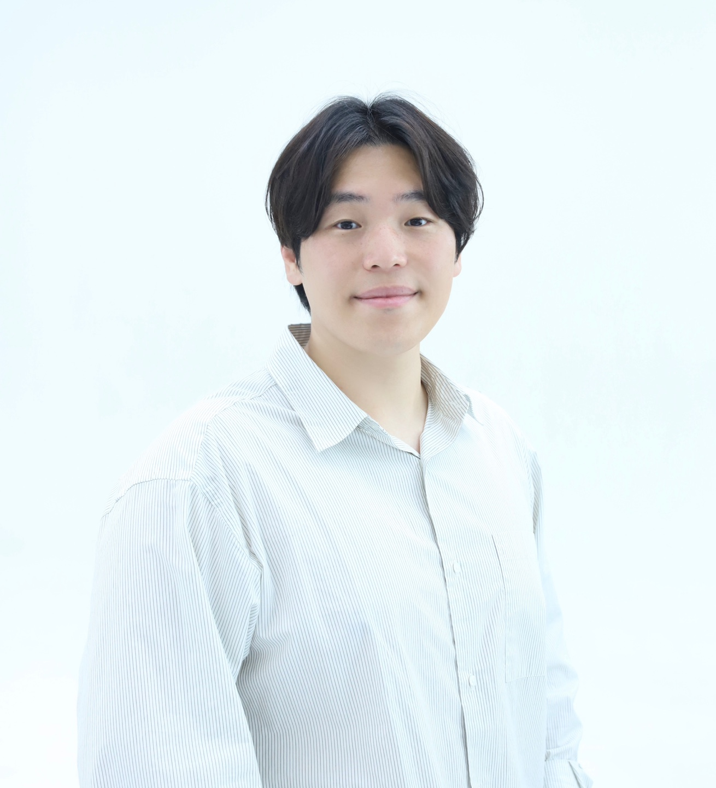

Ph.D. in Electrical Engineering
2024 – Present
KAIST — Urban Robotics Lab (Advisor: Prof. Hyun Myung)

Senior Researcher, ETRI
Ph.D. Candidate, KAIST (Electrical Engineering)
Deep learning & computer vision for physiological measurement · Daejeon, South Korea
I am a Senior Researcher at ETRI and a Ph.D. candidate in Electrical Engineering at KAIST (Urban Robotics Lab, advised by Prof. Hyun Myung). My research centers on vision-based human understanding — in particular remote physiological measurement (rPPG), biosignal analysis, and human mesh representation. I work on deep learning and computer vision methods for robust, non-contact estimation of physiological signals from video, including label-efficient learning and signal recovery under real-world illumination.
LSTC-rPPG: Long Short-Term Convolutional Network for Remote Photoplethysmography
IEEE/CVF Conference on Computer Vision and Pattern Recognition (CVPR), 2023
Weighted Knowledge Distillation of Attention-LRCN for Recognizing Affective States from PPG Signals
Expert Systems with Applications, 2023
Attention-LRCN: Long-Term Recurrent Convolutional Network for Stress Detection from Photoplethysmography
IEEE Int'l Symposium on Medical Measurements and Applications (MeMeA), 2022
Machine Learning–Based Automatic Rating for Cardinal Symptoms of Parkinson Disease
Neurology, 2021
Fuzzy Support Vector Machine-Based Personalizing Method to Address the Inter-Subject Variance Problem of Physiological Signals in a Driver Monitoring System
Artificial Intelligence in Medicine, 2020
QRS Detection Method Based on Fully Convolutional Networks for Capacitive Electrocardiogram
Expert Systems with Applications, 2019
Fetal QRS Detection Based on Convolutional Neural Networks in Noninvasive Fetal Electrocardiogram
Int'l Conference on Frontiers of Signal Processing (ICFSP), 2018
Adaptive Noise Reduction Algorithm to Improve R Peak Detection in ECG Measured by Capacitive ECG Sensors
Sensors, 2018
Adaptive Noise Reduction of Multichannel Signals Obtained by Capacitive ECG Sensors
Int'l Conference on Frontiers of Signal Processing (ICFSP), 2018
Full list and citation metrics on Google Scholar.
IR-based Remote PPG with Smart Glasses
Pulse estimation from infrared video using spatial-attention models and physics-based data augmentation.
Last updated: July 2026